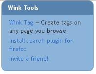
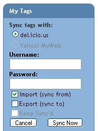
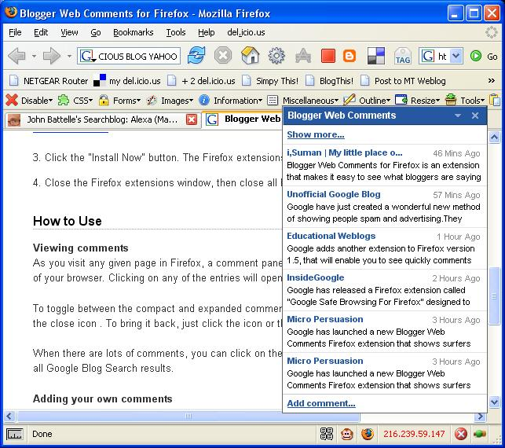
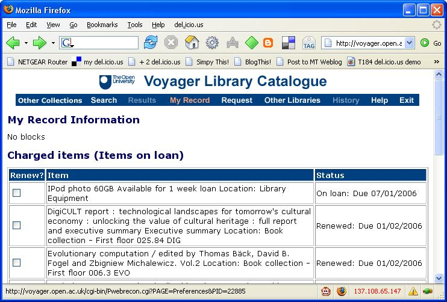

I just picked up an announcement about a Carson Workshops Summit - The Future of Web Apps that Marc Eisenstadt sent to a KMi mailing list:
This one-day conference [Wednesday, February 8, 2006, 10am — 6pm, Kensington Conference Centre, London, £75+vat] brings together those pioneers in the web development industry who are setting the agenda for tomorrow's apps. They will be discussing how Web 2.0 technologies are changing the way we interact and how you can use these to build powerful, next generation tools. So whether you're a business owner, developer or entrepreneur this day will help you choose the right technology for your next web-based application.
Speakers include:
If anyone who reads this list wants to chat around social bookmarking interoperability - or other matters - over coffee, or in the bar afterwards, I hope to make it to this event...
Over the last few weeks, I have joined more social bookmarking services that I can keep of without the support of a social bookmarking tool!;-), so in part I rely on email reminders and new feature announcements to keep me going back to the services I don't use on a regular basis.
Today's reminder was from Wink, a "people powered" search engine. They describe themselves thus:
Wink is a search engine that integrates tag results from multiple sources such as del.icio.us, Digg, Yahoo MyWeb (and we're adding more). It gives you the freshest information on the web by serving up the most relevant tagged links for your search. We crawl and index tags from all over the web, and serve them up with web results, for a combination of freshness and accuracy. We also include other user-contributed content, such as answers from Wikipedia that you'll find under the Wink Answers tag, which is added by people like you. We also provide Google search, because tag coverage is still thin in some areas, and while tag results are really interesting, we know what you want sometimes is best found on Google.You can also "tag" your results directly in Wink. A tag is similar to a bookmark, but it allows you also annotate any link with words that you associate with that link. For instance, if you tagged www.kodak.com, you could notate it with the terms "camera", "photography" and "film". Your tags are stored in your "My Page", so if you want to then go look at all the sites you use for photography, www.kodak.com and any others that you have tagged will be there.
The news item that caught my eye today was this:
"Sync your del.icio.us bookmarks to help you with your searches and make sure any favorites you mark at Wink are stored to your del.icio.us bookmarks."
So I gave it a go and sync'd my bookmarks from del.icio.us and into Wink easily enough, though I haven't tried the other way yet...
This relates very much to an earlier post on Social Bookmarking Interoperability, of course, although here it is one service (Wink) taking on the burden of importing and exporting info to/from another (del.icio.us, and presumably in the near future Yahoo!MyWeb2.0).
The Wink approach is not totally novel, of course - several other social bookmarking sevices allow you to do something similar. However, I wonder how many people, once they start using a particular social bookmarking service will make the effort to migrate to another? (The same is true in banking - people are loathe to change bank accounts from one provider to another..!) However, maintaining a sync'ed presence on several social bookmarking sites does mean that on those occasion when your main provider goes down (as del.icio.us did for me yesterday) you are still able to store bookmarks online.
One question that keeps coming to mind is how OUseful searching with peer, friend or cohort identified sites will be. Whilst not a walled garden, there may still be a tendency for groups to only see the sites they know about. This cuts both ways of course - by searching relevant sites you only get relevant info (hopefully!) BUT you may miss out on other, newer sites. Unless they get picked up by the sites you do accommodate and you add them to the fold.
The idea of users and groups building a lens to focus attention/search on user selected (i.e. high quality?!) sites related to a particular topic is not new of course (Squidoo's lenses couldn't be more explicitly named, the H20 Playlists perform a similar function, Rollyo's user defined meta-search engine allows you to search within a predefined list of sites on Yahoo! (hmmmm...;-) and Google is implying it's RSS reader is some sort of attention or content focussing device - http://www.google.com/reader/lens/).
Questions of course arise as to how best to manage to a course related lens, reminiscent of those raised in the context of social bookmarking in managed environments, though I think instructor control over a lens, e.g. where is it used to provide a way in to resources that are relevant to a particular topic and/or the delivery of particular,pre-specified learning outcomes (ergghhh..).
One thing I can see emerging within online courses is a "bounded search" element. If you look in any textbook, you will see standard features - academic content, exercise, lists of further reading etc. The structure is tried, tested and proven. In an online setting, it's not too hard to imagine constrained 'Further Search', where a tool such as Rollyo allows an instructor to identify a set of sites that a student can use to explore/search about a topic in a relatively focussed way.
This is one area where academic librarians may well be able to contribute to the ongoing support of elearning courses, although it is far more focussed in style than a resource such as ROUTES which just identifies high level, course relevant resources, rather than drilling down to sites that are particularly relevant to a particual topicof sub-topic within a course.
[Note to self and Lazyweb - build a search aggregator that performs a search over sites listed for a particular course in ROUTES, or over a particular set of sites listed in an RSS feed (such as a del.icio.us feed).]
Wink is still in closed Beta, although as they are trying to grow virally they are starting to roll out an 'Invite a Friend' service (mail me if you want an invite).

The Wink idea is close to that of Yahoo!'s MwWeb 2.0 (read more about it in this blog post, in this FAQ or in this post from Search Engine Watch), so it was interesting to note that a Wink sync to Yahoo!Myweb is also listed, though it's greyed out at the moment...

With Yahoo!'s purchase of del.icio.us, it will be interesting to see the extent to which people will become part of the search machine...!
In a social bookmarking system that supports groups, such as Simpy or Connotea, it is possible for a user to bookmark and tag a resource and commit it to the group. Just for the record, how should we scope the resource in such a case? (By scope, I mean under what views should we be able to see the resource.)
For sake of argument, let us imagine that user U is in group G, and tags a resource R with tag T1.
Under what conditions should we be able to lookup the resource?
For convenience, I shall use an implied URL with explicit argument passing inspired by the one used in IBM's Dogear social bookmarking service, where for example we identify tags, users, groups and resources explicitly using the arguments tag, group, user and resource respectively.
Using the variables X and Y as part of a request is to be regarded as making a query on the tags, groups, or users and returning satisficing results within X.
The distinguished term whatever=E should be read as 'for all whatevers Y that exist, run this query with whatever=Y and aggregate the results'. An additional term - submittedBy - is required to identify which user submitted a resource to a particular group.
The following list describes a 'could offer' categorisation, rather a recommendation of what the scope should or must be. Note that some of the queries may not be desirable, or even useful!
Resource Listings:
Who bookmarked this resource?
How is this resource tagged?
Who is active within a group?
Who might be worth inviting to the group?
Several questions come to mind from this exercise:
In measuring the relevance of a group to a particular user, do we also need to support a term that captures information resources that a user has bookmarked having had it brought to their attention as a result of seeing it in the group, personalisedBy for example. This is an active form of taking an interest in the resource, as opposed to bubbling up resources to a personal resource collection by virtue of inheriting the resource from a group a user is a member of.
We can then ask further questions along the lines of:
Personalisation can equally apply to the bookmarking of a resource from seeing it in a listing of resources identified through a tag or user search. By mining personalisedBy and submittedBy data, there is ample opportunity for a social bookmarking system used in an enterprise, for example, to add value by identifying users who should perhaps be introduced to each other on the basis of shared interests. That is, the mining of social bookmarks within an enterprise for unfulfilled or unrecognised relationships is potentially valuable in knowledge management terms.
For example:
Related to the notion of personalisation of bookmarks that appear in a group a user is a member of is the question: should users be notified whenever there is a new posting to a group they are a member of: a) if they have not already got a personal copy of that resource; or b) if they have a personal copy of that resource but did not see fit to post it to the group.
A follow on question then arises: if two users in the same group bookmark the same resource, perhaps even with the same tag and neither user posts the resource to the group, should a recommendation be made to them that they do post the resource to the group? This recommendation is likely to be even more compelling if the tag used to describe the resource is also a tag used heavily within the group.
More generally, if a user who is a member of a group bookmarks a resource with a tag that is used within the group, but does not submit the resource to the group, can the user be regarded as keeping a secret from the rest of the group.
One issue I keep trying to address is an email box full of old messages that I'm saving until such a time as I can collate them into e.g. a blog post (as I did with an email conversation sometime ago on online student engagement (the first para sets the scene; note that it's the STRUCTURE that's important, not the content...)
One approach that may be appropriate is the following simple idea - combine emails and wikis in WikiMail: WikiMail mockup #1, WikiMail mockup #2.
The principle is this: the mail wrapper provides the notification that a change has been made and opening the email opens straight into the web application/wiki.
One WikiMail scenario is for it to work like this:
Priviliges - the WikiMail privileges are as follows:
The WikiMail page is therefore private to contributors, although I suppose a mechanism could be included to open it up, or make it public (and frozen, like a blog post - e.g. a wikimail2blog function)
Attractive features to me are:
As well as wikis, the idea - at first glance - appears to translate well to other applications(imagine OfficeMail or AppMail (rather then WikiMail) where an online application/tool such as Writely is embedded in the mail edit window.
The model of OfficeMail is the same as WikiMail (converting your inbox for email into your intray for documents that need working on). Email is used to wrap the application and help you share it naturally with others (naturally in the sense that people are familiar with using email).
Why would this be useful?
Well, at the moment I am crossing emails with MS Word attachments with a collaborator as we tune an abstract for a conference paper. We keep passing a word document containing the most recent version of the abstract as an attachment between us.
What I would like is to be able to receive my "wordmail" message, open it, make changes and send it back, without having to open the email, download the message, make the change, create a new email, upload the document (or perhaps mail it form my wordprocessor - but that doesn't work properly and is no good if Gmail is my mail client, for example), send the email etc. How much easier if we could continue to do this by passing embedded, editable documents in our emails.
Many WP apps allow you to email documents as attachments, and of course you can open these attachments from an email, but the OfficeMail/WordMail approach is far more of an integrated environment...!
Despite its problems - and despite the attractiveness of custom collaborative software - email is a part of many people's lives and it's transactional model is well understood.
So - if the lazyweb Santa is listening, can I have WikiMail or WritelyMail for Christmas, please?
Note to self: could we use the following as feeds into thinking on curriulum development in the STEM subject areas?
The web's moving just too fast for me at the moment - Yahoo!'s purchase of del.icio.us, the announcement of the Alexa web Search Platform and this new Blogger Web Comments for Firefox extension are just three things to mention that caught my eye...
The Yahoo!/del.icio.us tie up will be an interesting one to watch via Yahoo!'s MyWeb2.0, although I suspect that that service will need opening up a little in both API and usability terms for it to really take off.
(For those of you who haven't looked at MyWeb2.0, you can bookmark and tag pages (which get archived) and set up social networks with other MyWeb2.0 users. These two elememts are combined when you search - results that have been bookmarked by members of you circle of contacts are highlighted straight after the paid-for advertising links, and above the 'normal' search results listing. As yet del.icio.us bookmarks can't be imported, but that surely is only a matter of time? It's also rather tricky getting people into your circle of contacts, whereas shareability is oh so simple and uncomplicated in del.icio.us.)
The Alexa web service - which provides users with access (for a small fee) to the Alexa index - is also another one to watch, and may lead to some interesting new search engines (Battelle briefly address this in his post on the announcement.
Finally, the Blogger web comments extension for Firefox. I guess this has something to do with Google looking for further payback on their Blogger investment, as well as making use of their blog search facility. So what does it do? Well, whenever you visit a page, you can check up to see who has blogged about the page, or post to Blogger (if you have an account there) about the page.

So is any of this interesting in a course related sense?
I think so - imagine a MyWeb2.0 like system in which all the students on a particular course are included in a group. Searching on a particular topic highlights pages that others who are taking - or who have taken - the course found useful. As well as these 'recommended' hits for the search, the user also gets the full Yahoo! search result, which may go some way towards maintaining diversity.
As far as the Blogger extension goes, being able to share thoughts about arbitrary pages on the web, although not necessarily in a conversational form, is a good way of accessing different perspectives on a particular page. Limiting access to comments that come solely from other students on a course may be an issue, of course!
And the Alexa web service? I'm working on that...:-)
Two or three weeks ago, the OU Library announced that they were going to start an experimental loans programme for techie toys - iPods, PSPs, and so on - although they have a more grown up name for the project: the mobile and gaming technologies pilot project.
So earlier this week I popped along to the Library to find out more about this project, and found myself leaving with an iPod, which I've never handled before (the PSP's battery had run down and the recharging cable was nowhere to be found..!).

As the Library are looking at ways we can use these technologies to support our HE distance education courses, the iPod came with a selection of education related podcasts, some audio snippets from OU courses, and a few images.
(Hopefully, we'll get some of our Blue Peter robot designs distributed that way (when we eventually get the full database of 32, 000 scanned images onliine, that is) and perhaps some of the other images from our Robot Gallery.)
As I have a 3 hour trip home from the OU, I thought I'd pop a few IT Conversations I hadn't got round to listening to onto the iPod for the journey home.
So - Problem 1:
I only had an old, old, old version on iTunes on my office PC, so thought I'd better do an upgrade. Visiting the iTunes site, the panel/frame that provides the download link on the iTunes download page wouldn't load - some firewall problem perhaps?
And Solution 1(?): could a recent iTunes installer be provided on the iPod as portable-memory-drive as a default? This would require the iPod to be recognised as a USB?plugin memory device, of course.
Anyway, rather than fight the internet, I thought I'd resolve the issue (of not having a current version of iTunes) by using my laptop, instead. This is after all the machine I'm likely to connect the iPod to most frequently, and I can use it to connect the enterprise public wireless network, which means if there was firewall problem, I can get round it.
So I now have iTunes...
(You'll note that I was assuming that I have to use iTunes - there was no manual as part of the loan (not that' I'd have read it anyway...).
When iTunes first started, I was offered the chance to scan my hard drive for files to add to the Library. Shall I do that - err, no - perhaps not - I have no idea what sort of junk maybe added. I did however drag a few items into the Library. The iPod at this time was not connected...
I also subscribed to a podcast or two (can you grab an OPML file to do this more efficiently?), though I don't recall if this worked properly or not...
For why? Well, to establish web access through the enterprise/public wireless network I need to have a proxy set up in my Firefox settings. Firefox seems to cope with this automatically, according whether I'm at work or at home. Certainly when I tried to access the iStore from iTunes when I got home, I was unable to at first ("Firefox works so why doesn't iTunes???Arrrgggghhhh..." etc.) because I had IE (which I don't use) set to go via the OU public wireless proxy... I don't remember if I had to set up IE to go via the proxy when I was setting up iTunes at work... (Hmm - perhaps this was the problem with the desktop machine, where I also use Firefox?)
Anyway - I have some content in my iTunes Library, I'm subscribed to a couple of podcasts, now for plugging in the iPod.
There are two things I remember about this:
So - Problem 2: if I delete all the OU provided content shipped on the iPod when I'm first trying to get to grips with it (by randomly clicking everything, it has to be admitted;-) how do I get it back?
Answer 2(?) - provide an RSS/podcast feed from a project page on the Library website that contains this default content.
At least now I have some stuff I know I want to listen to on the iPod for the journey home...
However, my car is an old one with just a radio and cassette deck - so I need a cassette adapter to replace to headphones - good job we have an all-singing, all-dancing Tesco nearby... (the adapter was about 4 quid I think, and with a bit of forcing goes into the iPod carry case...)
Anyway - the journey was a pleasant one, the iPod played through the tracks without my intervention, and it seems perfectly usable...
...except, perhaps, for the following (and I'll perhaps return to these in more detail in a future post):
And here are some more thoughts - from a quick play last night and to which I will return again:
When I tried a single date in the calendar it worked, when I tried a few it didn't...ho hum - one for when I have a bit more time perhaps...anyway - on the iPod, the successful single entry trial seemed to be delivered via a new option in the iPod Calendar menu, so this looks promising for delivering separate calendars for each and every course a student is subscribed to perhaps? (See the Microinfo page for hints as to what sort of calendar info may be appropriately delivered. Again, I'll blog that properly when I get a spare couple of hours.)
And to finish, here's a silly idea for much later: can we deliver course news to students via the iPod? e.g. by providing a computer voiced reading of course news, or a calendar entry that pops up an alert timed at 1-2 minutes after the student has synched their iPod to their course home page? Should 'useful references/course related books' be made available as notes for the iPod...?